魚兒活躍指數
›
良好！魚群活躍
主要活躍期
AM 7:31 — AM 10:01
次級活躍期
AM 1:55 — AM 3:35
潮汐
›
資料載入中…
-- m
下次乾潮時間
—下次乾潮高度
—下次滿潮時間
—下次滿潮高度
—天氣
›
資料載入中…
--°
↑ --°C
↓ --°C
↓ --°C
降雨機率
--%
體感溫度
--°
濕度
--%
浪況
›
資料載入中…
-- m/s
海洋溫度
--°
海流速度
-- m/s
浪的方向
--
風
›
資料載入中…
—級
— 公里/h
—°
紫外線
›
資料載入中…
0
氣壓
›
資料載入中…

↓
—
百帕
低高
月相
›
資料載入中…
🌘
照度—%
月出/月落—
下次滿月— 天
日落
›
資料載入中…

下次日出：—